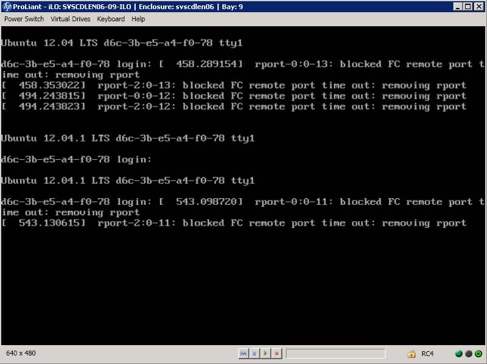
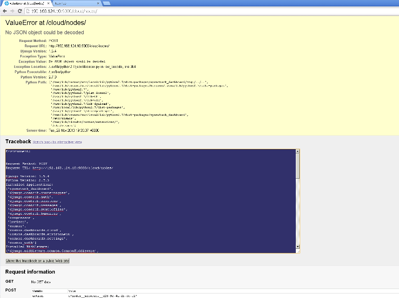
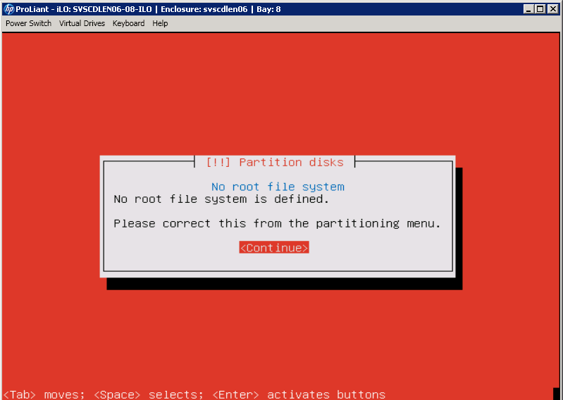

HP Cloud OS Troubleshooting
This topic describes known problems and solutions for the following areas:
Troubleshooting Cloud OS Operational Dashboard
- Problem: Admin node displays the "not ready" (gray) state
- Problem: Create new router fails
- Problem: When creating a new PXE node, the PXE boot fails with a TFTP timeout error
- Problem: Manage Nodes window not updating the status
- Problem: Create cloud or compute region fails
- Problem: Admin node internet access prerequisites fail to complete
- Problem: Instance not getting IP from a private network
- Problem: Admin node redirects to License page
- Problem: Fiber-Channel errors when booting node
- Problem: Error in the log during Deploy Cloud
- Problem: Services not started after controller node is rebooted
- Problem: A Cloud OS solution displays a yellow exception screen
- Problem: Cloud OS does not work after a restart
- Problem: Compute node not listed in the user-interface
- Problem: The time zone in the Controller node is incorrect
- Problem: Compute node fails to install OS (kernel error)
- Problem: Problem creating images using remote location
- Problem: Problem creating image using image file
- Problem: Unable to launch more instances
- Problem: Default route disappears from Controller node
- Problem: Not possible to log in the dashboard (license has expired)
- Problem: Create Cloud failed
- Problem: Find why Launch Topology fails
- Problem: Unauthorized exceptions when navigating in the dashboard
- Problem: Location of the log files
- Problem: Launch topology fails and Instance is created but with Error status
- Problem: Complete node internet access prerequisite hangs and then fails
- Problem: Incorrect Manage Node status prevents use of the node
Troubleshooting Cloud OS Installation
- Problem: Cloud Infrastructure install module proposal fails
- Problem: Cloud Controller node or Compute Region node displays the "not ready" (gray) state
- Problem: Stopping services before Cloud OS completes processing jobs can cause a job failure
- Problem: How to configure Cinder to use RAW multipath devices
- Problem: Red screen when installing OS on baremetal nodes
Troubleshooting Cloud OS ISO
This section describes the following known problems and solutions for the Cloud OS ISO:
Problem: ISO Error Running on a VM Hosted on a KVM Hypervisor
| Symptoms | The HP Cloud OS ISO shows an error when running on a virtual machine (VM) hosted on a KVM hypervisor. |
| Primary software component | ISO |
| Failure message | No root file system, no root file system is defined. |
| Probable cause | This error is due to the format of the virtual disk that is configured for the VM. |
Solution
Before booting the VM with the HP Cloud OS ISO media, ensure that the virtual disk format is IDE or SCSI.
Troubleshooting Cloud OS Operational Dashboard
This section describes the following known problems and solutions for the Operational Dashboard:
- Problem: Admin node displays the "not ready" (gray) state
- Problem: Create new router fails
- Problem: When creating a new PXE node, the PXE boot fails with a TFTP timeout error
- Problem: Manage Nodes window not updating the status
- Problem: Create cloud or compute region fails
- Problem: Admin node internet access prerequisites fail to complete
- Problem: Instance not getting IP from a private network
- Problem: Admin node redirects to License page
- Problem: Fiber-Channel errors when booting node
- Problem: Error in the log during Deploy Cloud
- Problem: Services not started after Controller node is rebooted
- Problem: A Cloud OS solution displays a yellow exception screen
- Problem: Cloud OS does not work after a restart
- Problem: Compute node not listed in the user-interface
- Problem: The time zone in the Controller node is incorrect
- Problem: Compute node fails to install OS (kernel error)
- Problem: Problem creating images using remote location
- Problem: Problem creating image using image file
- Problem: Unable to launch more instances
- Problem: Default route disappears from Controller node
- Problem: Not possible to log in the dashboard (license has expired)
- Problem: Create Cloud failed
- Problem: Find why Launch Topology ails
- Problem: Unauthorized exceptions when navigating in the dashboard
- Problem: Location of the log files
- Problem: Launch topology fails and Instance is created but with Error status
- Problem: Complete node internet access prerequisite hangs and then fails
- Problem: Incorrect Manage Node status prevents use of the node
Problem: Admin node displays the "not ready" (gray) state
| Symptoms | You cannot PXE boot new nodes. This problem occurs when you re-install Cloud OS on machines that were previously used with a Cloud OS environment. |
| Primary software component | Admin node |
| Failure message | |
| Probable cause | You changed the date on the Admin node or you brought up a previously allocated node to the Admin node. |
Solution
- Create a new Admin node.
- Before setting up the Admin node, be sure to power down all participating nodes that were running controller and compute roles.
- After the Admin node is set up, you must use the PXE boot process to power up the participating nodes.
See Install & Configure Your Cloud for complete instructions. If the nodes boot to the original operating system that was set up with the earlier Admin node, the boot process will cause irreparable damage to the Admin node and the entire process must be restarted.
Problem: Create new router fails
| Symptoms | Your attempt to create a new router fails, either in the designer or when manually creating a new router and adding the interfaces. |
| Primary software component | Operational Dashboard |
| Failure message | Failed to add interface to router <router-name> |
| Probable cause | Your environment already contains a router that is configured to connect the networks you are attempting to connect. Only one router is allowed to connect networks. |
Solution
Use the existing router to provision, instead of creating a new one.
Problem: When creating a new PXE node, the PXE boot fails with a TFTP timeout error
| Symptoms | In the Operational Dashboard, the Admin node takes a long time to reboot. |
| Primary software component | Admin node |
| Failure message | |
| Probable cause | This occurs in a few cases after the Admin node is rebooted. |
Solution
- Log in to the Admin node and run the following commands:
sudo bluepill tftpd stop sudo bluepill tftpd start
- After these commands have run, PXE boot the nodes.
Problem: Manage Nodes window not updating the status
| Symptoms | The status of the Manage Nodes window does not update after you perform an operation. |
| Primary software component | Admin node |
| Failure message | N/A |
| Probable cause | The Manage Node window needs to refresh, so it will show updated node status. |
Solution
Navigate to other menus, and then back to the Manage Nodes tab to force the display to update.
Problem: Create cloud or compute region fails
| Symptoms | The operation to create a cloud or a compute region fails without a known cause. |
| Primary software component | Admin node |
| Failure message | Failed |
| Probable cause | One or more of the nodes used wasn't ready to be used or is in a bad state. |
Solution
- Check whether the nodes you are using are in a good status. Use SSH to check:
- Node not with problem or hanged in PXE boot (PXE-MOF: Exiting Emulex PXE ROM). In this case, reboot the node and perform another PXE boot.
- Chef-client running in the node. If no errors occur, re-try the operation. Otherwise, reboot the node and perform another PXE boot.
- If SSH does not reveal the problem, check the logs for more information.
/var/log/cosmos/cosmos.log /var/log/apache2/error.log
Problem: Admin node internet access prerequisites fail to complete
| Symptoms | You work through the steps for the Cloud Administration node internet access prerequisite. You click Complete Prerequisite, and a failure message displays. |
| Primary software component | Operational Dashboard |
| Failure message | Failed completing the Prerequisite. |
| Probable cause | You selected an interface that does not exist in your environment. For example, if your system contains two NICs, (eth0 and eth1), selecting eth2 will cause the prerequisite to fail.
On the Admin node, view the log files for details:
/var/log/cosmos/cosmos.log /var/log/apache2/error.log |
Solution
- Verify that a public network is configured in the Admin node.
- Redo the steps for Cloud Administration node internet access prerequisite - see "Set Admin Node Prerequisites" in the HP Cloud OS Installation and Configuration Dashboard.
- Correct the proxy entries and/or specify a different proxy host and/or port.
You must do pre-work before starting cloud deployment. If there are any incorrect details, the entire operation must be re-done.
The pre-work includes:
- Identifying the NIC card sequence for Admin, OS_SDN and Public interfaces on all participating machines.
- Identifying the private IP range for hosts and guest VMs.
- Identifying the Public IP range for hosts and guestVMs.
Problem: Instance not getting IP from a private network
| Symptoms | You create a new private network. New launched instances do not get IP from that network. |
| Primary software component | Operational Dashboard |
| Failure message | N/A |
| Probable cause |
Solution
Restart the network services on the network controller. Execute the command below in the respective node.
cd /etc/init.d/ for i in $( ls quantum-* ); do sudo service $i restart; done
Problem: Admin node redirects to License page
| Symptoms | Every operation that you execute in the Admin node redirects you to the License page. |
| Primary software component | Admin node |
| Failure message | N/A |
| Probable cause | The license is expired. |
Solution
Contact HP Support to renew your license.
Problem: Fiber-Channel errors when booting node
| Symptoms | After a node is allocated, a Fiber-Channel (FC) error appears during the operational system boot. |
| Primary software component | Admin node |
| Failure message | Blocked FC remote port timeout: removing rport |
| Probable cause | The blade FC connection is not configured. That causes a timeout, and the port is removed from the OS level. See screen capture. |

Solution
This problem can be ignored and shouldn't cause future problems. In the unlikely event of side-effects, contact HP Support.
Problem: Error in the log during Deploy Cloud
| Symptoms | A PXE boot and installation completes with success. However, the Compute node is not listed in the user-interface (UI). |
| Primary software component | Admin node |
| Failure message | Crowbar configuration has errors. Please fix and rerun install. |
| Probable cause | This is a known message in the logs, which likely does not signify a problem. You should be able to use the cloud. |
Solution
You can ignore this error message. If you experience any other problem during cloud deployment, contact HP Support.
Problem: Services not started after Controller node is rebooted
| Symptoms | After you reboot the Controller node, some of the services are not started. |
| Primary software component | Controller node |
| Failure message | N/A |
| Probable cause | This is likely a timing issue, caused by the hardware you use. For example, one possible reason is that your server configuration is less than the minimum required. |
Solution
Use SSH to connect to the Controller node. Then use the following commands to learn whether services are started. If a service is stopped, start it manually.
for job in $( ls /etc/init.d/nova-* ); do service ${job##*/} status; done
for job in $( ls /etc/init.d/cinder-* ); do service ${job##*/} status; done
for job in $( ls /etc/init.d/quantum-* ); do service ${job##*/} status; done
Problem: A Cloud OS solution displays a yellow exception screen
| Symptoms | A yellow exception screen occurs when you are navigating in a dashboard. |
| Primary software component | Installation, Administration and Operational Dashboards |
| Failure message | Value Error at XYZ |
| Probable cause | The Cloud OS solution could not get specific information, or the information was wrong. See the following screen capture examples. |

Solution
Refresh your browser. If the problem persists, contact HP Support.
Problem: Cloud OS does not work after a restart
| Symptoms | After you restart all the nodes, the Cloud OS solution doesn't work as before. Services do not work as expected. |
| Primary software component | Admin node |
| Failure message | General problems using the solution. |
| Probable cause | Sometimes, after a restart, the services don't start automatically, or services start in a bad state. |
Solution
Check whether all services are running well in the Controller node. First, declare all the system variables, and then execute:
keystone user-list(Should- a list of all users.)
glance index(Should return a list of images.)cinder list(Should return a list of volumes, if any were created.)quantum agent-list(Should return a list of agents with "happy" status.)nova-manage service list(Should return a list of services with "happy" status.)
Problem: Compute node not listed in the user interface
| Symptoms | After a successful PXE boot and installation, the Compute node does not display in the user interface. |
| Primary software component | Admin node |
| N/A | |
| Probable cause | A Cloud OS network with more than one DHCP server running. |
Solution
If the installation completed without a problem and the node is not listed, probably the node booted using a different DHCP server. The Cloud OS network should be isolated.
Problem: The time zone in the Controller node is incorrect
| Symptoms | By default, the time zone in the Controller node will be different from the time zone in the Admin node. |
| Primary software component | Controller node |
| Failure message | N/A |
| Probable cause | This behavior is by design. |
Solution
Change the time zone in the Controller node to the one you want. Use the following command:
pkg-reconfigure tzdata.
Problem: Compute node fails to install OS (kernel error)
| Symptoms | After you reboot the Controller node, some of the services are not started. The services should be started. |
| Primary software component | Admin node |
| Failure message | N/A |
| Probable cause | The server configuration (hardware) is not supported by the OS. |
Solution
Investigate the problem. Normally, the problem is related to the hardware used. Try an Internet search on the specific error.
Problem: Problem creating images using remote location
| Symptoms | Cannot create an image pointing to an external server, when using the remote location option. |
| Primary software component | Operational Dashboard |
| Failure message | Connection was reset |
| Probable cause | Connectivity problem between the server with the image and the Controller node. |
Solution
Check whether the Controller node can access the image server. SSH to the server and execute this command:
curl -O http://server.ip/image.file
If the curl does not work, you know that the server can't access the image. You probably have a proxy issue or no connectivity. Fix the issue and try again.
Problem: Problem creating image using Image File
| Symptoms | Cannot create an image pointing to a file that is located on your local system, when using the Image File option. |
| Primary software component | Operational Dashboard |
| Failure message | Connection was reset |
| Probable cause | The image is bigger than the supported limit for this specific operation. |
Solution
You cannot use the Image File option (which is for images on your local system) to upload images bigger than 1.5 GB. The solution is to:
- Win SCP to the Admin node.
- Upload the image to /tmp/.
- Change the permission of the file to 777 (chmod 777 /tmp/<image.name>).
- Move the file to the folder
tftpboot. - Create the image pointing to this URL (http://<admin.node.ip>:8091/<image.name>).
Problem: Unable to launch more instances
| Symptoms | You have created instances successfully. Then "Launch new instance" fails. |
| Primary software component | Operational Dashboard |
| Failure message | Quota exceeded for instances: Requested 1, but already used 1 of 1 instances", "code": 413 |
| Probable cause | You have reached the limit of instances that are allowed for your project. |
Solution
To change the project limits, see How to Change a Project's Compute or Storage Limits in the Cloud OS Administration Dashboard Help.
Problem: Default route disappears from Controller node
| Symptoms | The default route disappears from the Controller node after reboot. |
| Primary software component | Operational Dashboard |
| Failure message | N/A |
| Probable cause | This behavior is by design. |
Solution
You do not need to do anything. The default route should automatically be re-added within 20 minutes of the node reboot. However, you can manually start the process by connecting to the Controller node and executing the command chef-client.
Problem: Not possible to log in the dashboard (license has expired)
| Symptoms | You cannot open or log in to any of the dashboards. |
| Primary software component | Admin node |
| Failure message | The HP Cloud OS license has expired |
| Probable cause | You are attempting to use an expired license. |
Solution
Contact HP Support to renew your license, and then add the new license in the Admin node (Settings > License).
Problem: Create Cloud failed
| Symptoms | The operation to create a cloud failed without providing any useful failure information. |
| Primary software component | Admin node |
| Failure message | N/A |
| Probable cause | Check the logs for indications of a possible cause. |
Solution
Check the logs below for more information. The logs may help you understand the cause of the error.
/opt/dell/crowbar_framework/log/production.log /opt/dell/crowbar_framework/log/* (for more information) /var/log/barclamps/*
Problem: Find why Launch Topology fails
| Symptoms | The operation to create a cloud failed without providing any useful failure information. |
| Primary software component | Admin node |
| Failure message | N/A |
| Probable cause | Check the logs for indications of a possible cause. |
Solution
Click on the failed topology to see the details of the error. If the message doesn't explain why the provisioning failed, check the Cloud OS logs in the Controller node located at:
/var/log/eve-requestworker/eve-requestworker.log /var/log/eve-api/eve-api.log
Problem: Unauthorized exceptions when navigating in the dashboard
| Symptoms | While navigating through the Operational Dashboard, you see an Unauthorized error, and no items display in the user interface. |
| Primary software component | Operational Dashboard |
| Failure message | Unauthorized (HTTP 401) |
| Probable cause | Your session expired, but you did not log out from the Operational Dashboard. |
Solution
Navigate to another item in the Operational Dashboard menu. If the problem persists, logout and login again.
Problem: Location of the log files
| Symptoms | You want to check the logs or collect the logs for further investigation. However, the logs are not all saved in one place. |
| Primary software component | |
| Failure message | |
| Probable cause | You need to check all the logs to discover the cause of a failure. |
Solution
- Admin node logs:
/var/log/cosmos/cosmos.log /var/log/apache2/error.log
- Deploy Cloud Logs:
/var/log/install*.log /var/log/install*.err
- Controller node logs:
/var/log/cosmos/cosmos.log /var/log/apache2/error.log
- Deploying Admin node:
/opt/dell/crowbar_framework/log/production.log /opt/dell/crowbar_framework/log/* /var/log/barclamps/*
- Launch Topology Logs:
/var/log/eve-api/eve-api.log /var/log/eve-requestworker/eve-requestworker.log /var/log/focus-api/focus-api.log /var/log/graffiti-api/graffiti.log
Problem: Launch topology fails and instance is created but with error status
| Symptoms | Your attempt to launch a topology fails, but all the components in the design (for example, router, network, etc.) are successfully created. The instance has an Error status. |
| Primary software component | Operational Dashboard |
| Failure message | N/A |
| Probable cause | This problem is usually because Cloud OS services had a problem executing the operation. Likely, this happened in an I18N environment. |
Solution
Clean up all the items (for example, router, network, groups, and instance) created by the failed topology launch. In the Controller node, restart the following Cloud OS services:
service eve-requestworker restart service eve-api restart
Problem: Complete node internet access prerequisite hangs and then fails
| Symptoms | "Complete the Cloud Administration Node Internet Access" prerequisite hangs for a long time and then fails. |
| Primary software component | Admin node |
| Failure message | Unable to access the Internet. Check network and proxy settings. |
| Probable cause | The Admin node server can't access the Internet using the proxy information that was used to configure the prerequisite. |
Solution
- Check whether the proxy details are correct. If the details are incorrect, fix them and try again.
- Check whether the Admin node has access to the proxy server. If it does not have access, fix the problem and try again.
- The last option is to remove the proxy information and complete the prerequisite without the proxy information.
Problem: Incorrect Manage Node status prevents use of the node
| Symptoms | After some operations, the Manage Node status remains incorrect, for example "Resetting." The node is not usable. |
| Primary software component | Admin node |
| Failure message | N/A |
| Probable cause | For an unknown reason, the node entered an invalid state, and its status is not being updated. |
Solution:
If the node is not in use, shut it down, power it on again, and make it PXE boot again. This should fix the status and set the node to "Not Allocated," allowing you to use the node again.
Troubleshooting Cloud OS Administration Dashboard
This section describes the following known problems and solutions for the Administration Dashboard:
- Problem: Console Connect timeout issue in the Administration Dashboard
- Problem: Default Ubuntu cloud image and CirrOS images only show one active network even if multiple networks are specified
- Problem: Instance resize feature does not work when there is only a single Compute node
Problem: Console Connect timeout issue in the Administration Dashboard
| Symptoms | In the Administration Dashboard, if you click a provisioned instance and use Internet Explorer to open the Console, a Console Connect timeout issue occurs. |
| Primary software component | Browser used for the Console in Administration Dashboard. |
| Failure message | Console Connect timeout |
| Probable cause | Microsoft Internet Explorer browser is not supported. |
Solution
Only use Google Chrome 14 or Mozilla Firefox 6 to open the Console.
Problem: Default Ubuntu cloud image and CirrOS images only show one active network even if multiple networks are specified
| Symptoms | The default Ubuntu cloud image and CirrOS images have only one active NIC in their network configuration. If you specify multiple VNICs (networks) when creating a VM, only the first interface is used. |
| Primary software component | Administration Dashboard |
| Failure message | |
| Probable cause | The default number of networks for the Ubuntu cloud image and CirrOS images is one. |
Solution
There are two ways to make the second NIC active.
- Bring up eth1 manually.
Place the entry for the eth1 in /etc/network/interfaces file to make it persistent across reboots.
Sample eth1 entry:
auto eth1 iface eth1 inet dhcp dhclient eth1
(The last command above will query for the DHCP ip for eth1.)
- Create a custom image with 2 active NICs.
To do this, specify both eth0 and eth1 in the ./etc/network/interfaces file while creating an image.
Problem: Instance resize feature does not work when there is only a single Compute node
| Symptoms | In a cloud with only one Compute node, you attempt to resize an instance to a different flavor. The operation fails. |
| Primary software component | Browser used for the Console in Administration Dashboard. |
| Failure message | N/A |
| Probable cause | Instance resize only works when your environment includes multiple Compute nodes. |
Solution
Use this feature only if your HP Cloud OS environment includes multiple Compute nodes.
Troubleshooting Cloud OS Installation
This section describes the following known problems and solutions for the Installation Dashboard:
- Problem: Cloud Infrastructure install module proposal fails
- Problem: Cloud Controller node or Compute Region node displays the "not ready" (gray) state
- Problem: Stopping services before Cloud OS completes processing jobs can cause a job failure
- Problem: How to configure Cinder to use RAW multipath devices
- Problem: Red screen when installing OS on baremetal nodes
Problem: Cloud Infrastructure install module proposal fails
| Symptoms | An error message displays and the status turns red when a proposal fails. |
| Primary software component | Installation Dashboard |
| Failure message | Failed to apply the proposal to: <Cloud Controller Node name> |
| Probable cause | There are several possible causes. See the Solution section. |
Solution
Try applying the proposal again. If that fails:
- Deactivate the proposal.
- Delete the proposal and create it again.
- SSH in to the Admin node using the credentials: crowbar/crowbar.
- Review the log files /opt/dell/crowbar_framework/log/production.log and <MacAddressHostname>.chef.log.
- Review the log file /var/log/apache2/error.log.
- Review the folder /var/tmp/cosmos and verify the installer settings.
Problem: Cloud Controller node or Compute Region node displays the "not ready" (gray) state
| Symptoms | Installation Dashboard is unable to monitor the Cloud Controller node or the Compute Region node. |
| Primary software component | Installation Dashboard |
| Failure message | |
| Probable cause | The Cloud Controller node or the Compute Region node has not updated the live status to the Admin node. |
Solution
Log in to the suspect node through SSH and run sudo chef-client. This will force the node to update its status with Chef.
Problem: Stopping services before Cloud OS completes processing jobs can cause a job failure
| Symptoms | The state of the job may vary in this situation. The job might fail with an error message or be stuck in processing with no error message. In some cases, the job might resume after the service restarts. Make sure all the processing jobs are completed or canceled before stopping any Cloud OS services. |
| Primary software component | |
| Failure message | |
| Probable cause | Jobs may fail if services (such as Eve, Peer, and Focus) are stopped before Cloud OS completes provisioning or deprovisioning the jobs. |
Solution
Wait for the jobs that are processing to complete, or manually terminate those jobs. Then re-apply the install modules or restart the upstart services manually in the Installation Dashboard.
Problem: How to configure Cinder to use RAW multipath devices
| Symptoms | The administrator wants to configure Cinder to use a multipath device. |
| Primary software component | Installation |
| Failure message | N/A |
| Probable cause | By default, Cinder doesn't come configured for multipath. |
Solution
Configure multipath storage. Use the following commands:
apt-get install multipath-tools cp /home/crowbar/multipath.conf /etc /lib/udev/scsi_id -g -u -d /dev/sdbsed \-i 's/36001438005df087b0000600003d40000/Replace with value from line #3/' /etc/multipath.conf cat /etc/multipath.conf reboot
pvcreate /dev/mapper/iaasc vgcreate nova_instances /dev/mapper/iaasc lvcreate -L999G -n logical_nova1 nova_instances mke2fs -t ext4 /dev/nova_instances/logical_nova1 mount -t ext4 /dev/nova_instances/logical_nova1 /var/lib/nova/instances/ chown nova:nova /var/lib/nova/instances/ restart nova-computesed -i '$ a /dev/nova_instances/logical_nova1 /var/lib/nova/instances 0 2' /etc/fstab
After that, follow the instruction below post reboot:
pvcreate --metadatasize 1020 /dev/mapper/iaasc vgextend cinder-volumes /dev/mapper/iaasc vgreduce cinder-volumes /dev/loop0
Problem: Red screen when installing OS on baremetal nodes
| Symptoms | During the installation process, the partition cannot be created. |
| Primary software component | Installation |
| Failure message | No root file system is defined |
| Probable cause | The iLO lost the virtual drive connection. See the example screen capture. |

Solution
Reboot the server, check whether the iLO is still mapped correctly, and re-execute the operation.